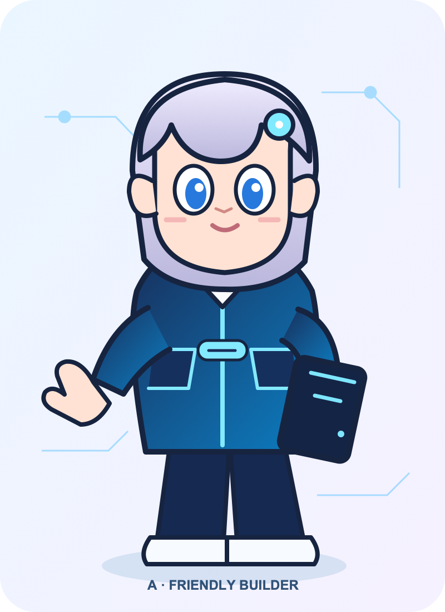
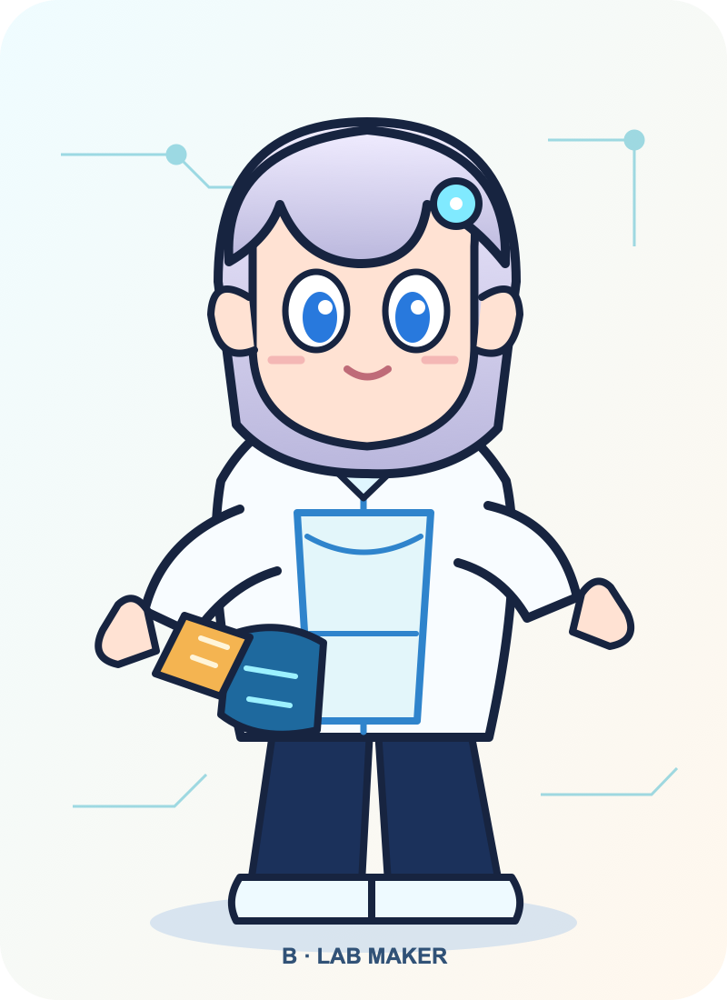
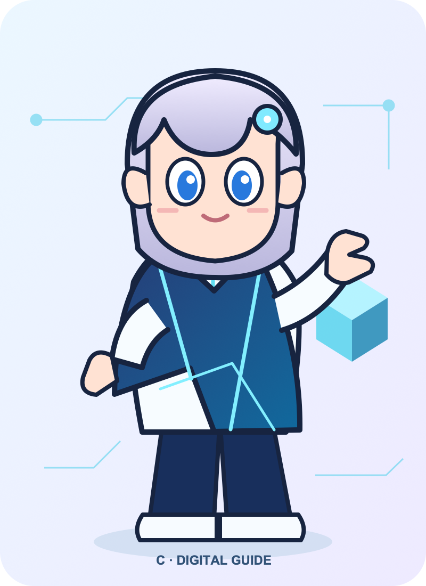

핵심 근거 ①
A는 태블릿·재킷만으로도 AI 빌더 역할이 직관적이며, 소개·온보딩·교육 화면에 무난합니다.
AI를 ‘함께 만들고 안내하는 사람’으로 보이게 하는 여성 치비 캐릭터의 방향 비교안입니다. 보고서의 제안 결론은 A를 우선으로 하고, B의 소품 언어를 일부 활용하는 것입니다.

초기 접점에서는 접근성과 일관성이 중요하고, 실험·워크숍 맥락에서는 메이커 소품이 활동성을 보완합니다.
A는 태블릿·재킷만으로도 AI 빌더 역할이 직관적이며, 소개·온보딩·교육 화면에 무난합니다.
세 안은 같은 얼굴·헤어·눈·헤어핀을 공유해 한 브랜드 세계관으로 확장할 수 있습니다.
현 단계는 방향 시안입니다. 상표·초상·기존 자산 유사성, 축소 가독성, 원본 로고 합성은 정식 제작 전 별도 검수해야 합니다.
모든 얼굴·손·전신은 본 제안서를 위해 직접 SVG로 제작했습니다. GPT/삼각 머리장식/타 브랜드 문양/기존 밈의 복제 요소는 사용하지 않았습니다.
구성: 은백색 라벤더 단발, 큰 파란 눈, 네이비·시안 테크 재킷, 둥근 헤어핀, 작은 태블릿.
장점: 가장 빠르게 역할을 이해시키고, 공감·신뢰의 첫 인상이 강함.
단점: 실험실의 손맛·제작 행동은 B보다 약함.
적합 용도: 홈페이지, 온보딩, 교육 안내, 기본 프로필.
변경 포인트: 태블릿 화면은 실제 제품 UI 대신 추상 선으로 유지; 정식 제작 시 원본 로고 합성.

구성: 같은 여성 핵심 얼굴, 라이트 재킷·앞치마, 도구 파우치, 네이비 바지의 정면 기본 자세.
장점: 워크숍·프로토타입·실험 맥락을 소품으로 빠르게 전달.
단점: 현 시안은 정면 기본 자세이므로 실제 제작 동작의 설득력은 정식 제작에서 보강 필요.
적합 용도: 해커톤, 메이커 교육, 실험실 콘텐츠.
변경 포인트: 파우치 도구는 중립 오브제로 유지하고, 실제 만드는 포즈는 후속 정식 제작 항목으로 분리.

구성: 같은 여성 핵심 얼굴, 비대칭 테크 케이프, 시안 포인트, 길을 안내하는 자세.
장점: 정보 탐색·멘토링·경로 안내 메시지에 기억점이 있음.
단점: 케이프 실루엣은 운영자보다 안내자 인상을 강화함.
적합 용도: 네비게이션, 멘토링, 행사 안내, FAQ.
변경 포인트: 우측 추상 큐브는 브랜딩 확정 전 중립 도형으로만 사용.
| 평가 기준 | A 친근한 빌더 | B 실험실 메이커 | C 디지털 가이드 |
|---|---|---|---|
| 첫 인상 | 친근하고 신뢰감 있는 동료 | 손으로 만드는 실험가 | 다음 행동을 돕는 안내자 |
| 핵심 강점 | 범용성·명료성 | 제작 활동성 | 길 안내·서사성 |
| 정보 밀도 | 낮음 — 재사용이 쉬움 | 중간 — 소품이 메시지를 보완 | 중간 — 실루엣이 역할을 설명 |
| 우선 적용 | 브랜드 기본 캐릭터 | 워크숍·프로토타입 | 가이드·행사 동선 |
| 권고 | 1순위 채택 제안 | A에 소품 언어 차용 | 보조 역할군으로 보류 |
※ 비교표와 각 안의 장단점은 사용자 테스트 결과가 아닌, 이번 제작자가 방향 선택을 돕기 위해 제시한 정성 판단입니다.
사용자 제공 제작 요구를 기준으로 색·복장·소품·포즈·금지 요소를 반영했습니다. 외부 사실이나 브랜드 자산을 인용하지 않았습니다.
본 보고서의 A/B/C SVG 및 PNG는 이번 작업에서 새로 제작한 방향 비교용 벡터 시안입니다. 이미지모델 생성물이나 기존 최종 제작본이 아닙니다.
내부 채널 원문, 이벤트 식별자, 담당자 실명, 내부 지연 책임은 공개 보고서에 포함하지 않았습니다.
{kind=link}
{kind=link}
{kind=link}
{kind=link}
{kind=link}
{kind=link}